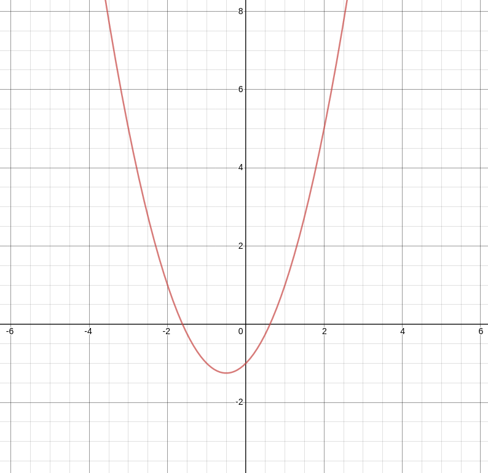

Historical Context
Curiose with Quadractics
In the early 800s Al-Khwarizmi, one of the first directors of the House of Wisdom in Baghdad, created the foundation for Algebra. He created a technique for solving quadratic equations which led to a general quadratic formula. Unfortunately for these arabic mathematicians, not every equation had a real solution; instead they got the square roots of negative numbers for those specific equations. Even though they did not acknowledge the importance of these imaginary numbers, their discoveries led to interest in these solutions and eventually to the modern development of complex numbers.
algebra has now moved decisively from the original geometric stage to the static equation-solving stage. Al-Khwarizmi wants to solve equations. And an equation has one or two numerical answers. His successors in the Islamic world do much the same thing.
Movement of Math to Europe
During the 11th century Abraham bar Hiyya, a Jewish mathematician living in Spain, translated and compiled Islamic and Indian-based mathematics, including the quadratic formula. Continuing the movement of bar Hiyya, Plato de Tivoli compiled bar Hiyya’s work into the liber embadum which went to inspire European mathematicians during the Middle Ages. However, these texts were not the only mathematical intellectual property brought to Europe, because Leonardo de Pisa (Fibonacci) also learned and translated Islamic mathematics into works like Liber Abaci. During this transition, Fibonacci also was the first to develop the standardized cubic equation.
The Islamic algebra which was transmitted to Europe in the twelfth and thirteenth centuries was just the static equation-solving algebra. There were several routes that al-Khwarizmi's algebra took into Europe, including the work of Leonardo of Pisa (Fibonacci), and Abraham bar Hiyya (in Spain - d. 1136), as well as the direct translations made by Robert of Chester and Gerard of Cremona. In all of them, the basic idea of static equation - solving remained.
Strategic Advantages for Maths
As commerce developed in Europe, traders used mathematics to become strategically advantageous. This led to the popularity of mathematicians and the creation of many logical formulas based upon the original rule sets used for commerce, evolving the field past the original physical ties.
Yeet